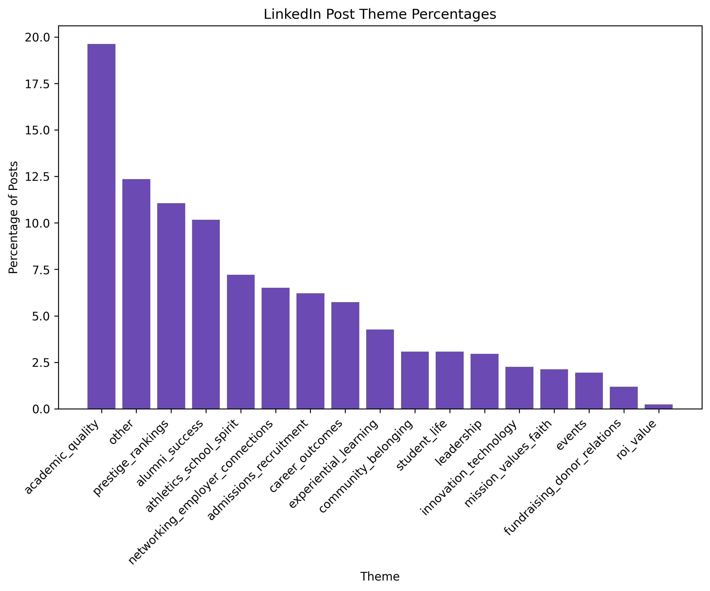
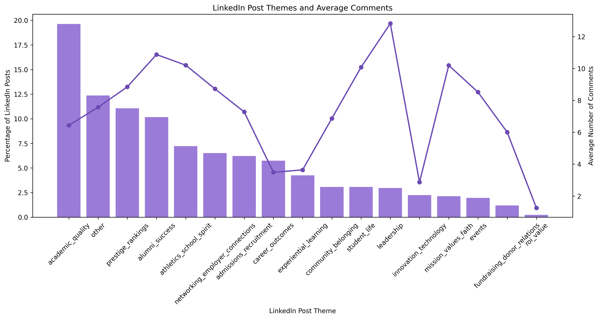
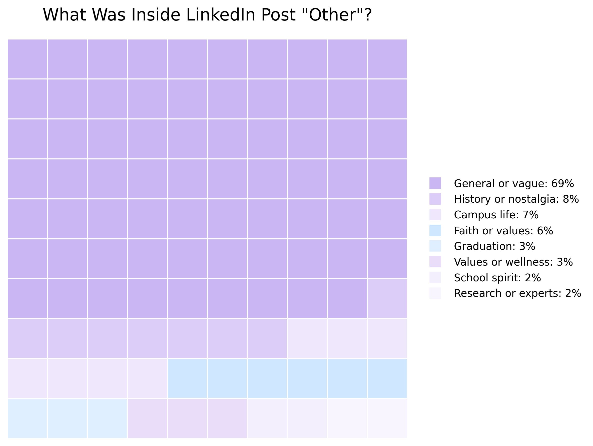
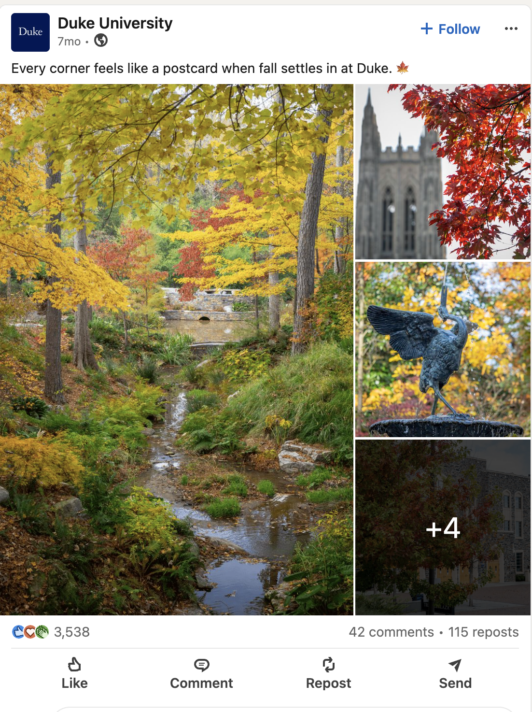
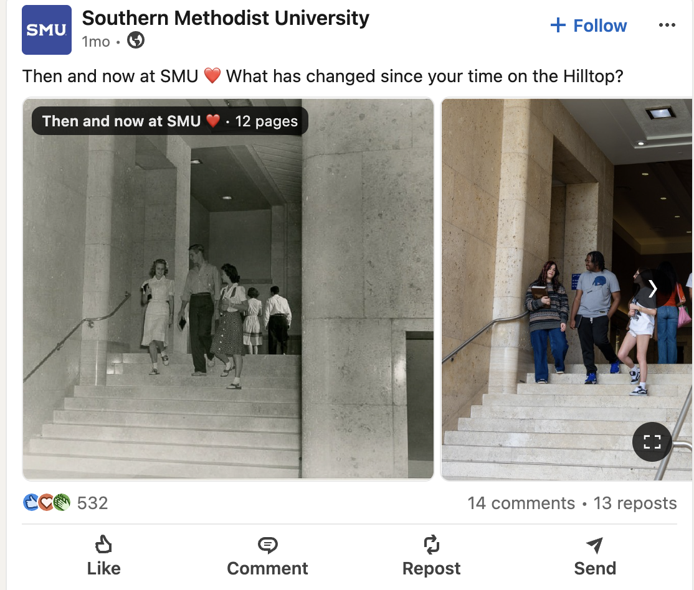
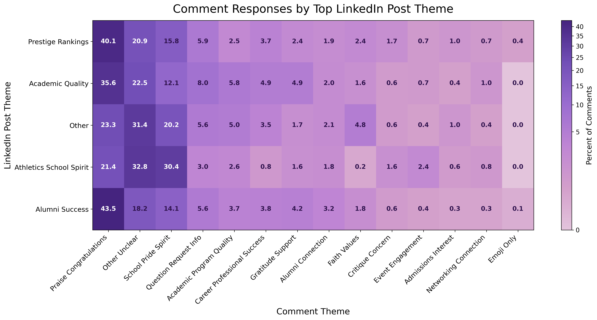
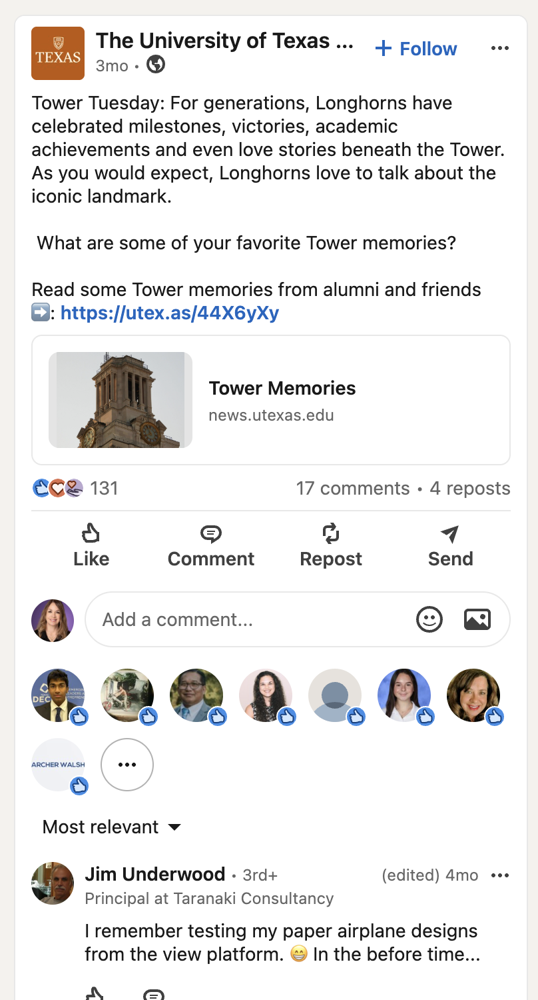
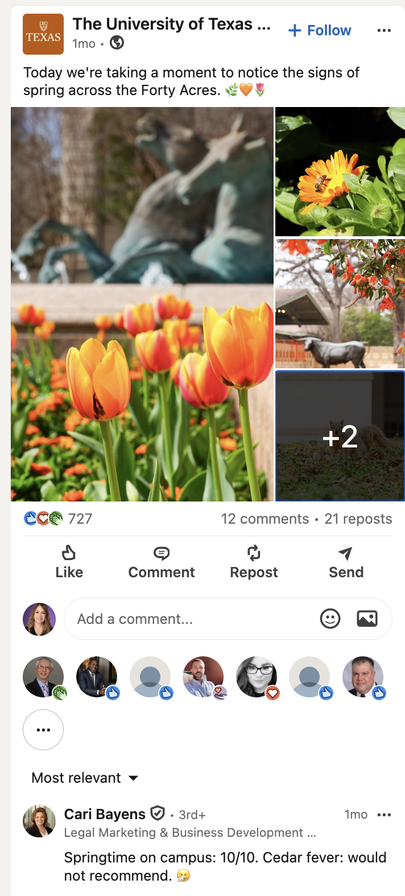
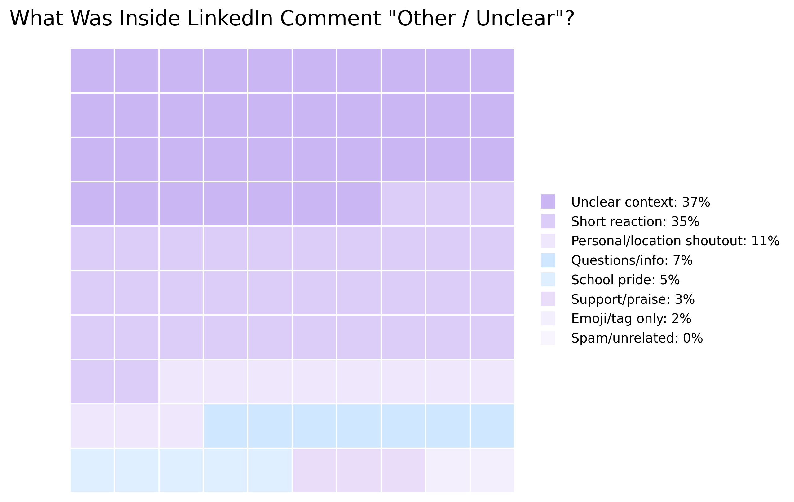

Platform Analysis
This page looks at LinkedIn posts and comments from the schools in the sample. The charts show which themes appeared most often in the posts, how much conversation those posts created, and how people responded in the comments.
LinkedIn posts included school updates, academic content, rankings, alumni success, leadership, employer connections, and professional achievement.
LinkedIn comments showed audience responses to school content, including praise, school pride, questions, short reactions, and other comments that needed a closer look.
This chart shows which themes appeared most often in the LinkedIn posts.

This section highlights the five most common themes from the LinkedIn post chart. The larger bubbles appeared more often in the data.
This chart compares how often each LinkedIn post theme appeared with the average number of comments those posts received. The bars show the share of posts in each theme, and the line shows the average comment count for that theme.

This waffle chart gives a closer look at the LinkedIn posts that were coded as “other.”


This post was coded as “other” because it created a broad school feeling, but did not clearly fit one of the main professional themes.

This post was coded as “other” because it focused more on memory, atmosphere, or school history than a main LinkedIn theme like rankings, careers, or alumni success.
This heatmap connects the top LinkedIn post themes to the comment themes that appeared on those posts. It helps show that different kinds of school posts received different kinds of audience responses.

This section highlights the five most common themes from the LinkedIn comment data. The larger bubbles appeared more often in the comments.
The “other or unclear” category was a broad group, so I looked more closely at those comments and broke them into smaller subcategories. This showed that the group included several different kinds of responses instead of one single comment style.
The screenshots below show two examples from that broader category.

This comment was placed in the broader “other or unclear” category because it was more of a personal memory or location-based response than a clear comment theme.

This comment was placed in the broader “other or unclear” category because it expressed a reaction or feeling, but did not clearly fit one of the main comment themes.
This waffle chart shows what was inside the broader “other or unclear” comment category. The largest subgroups were unclear context and short reactions, followed by smaller groups like personal or location-based shoutouts and questions.

The LinkedIn post data showed that schools used the platform for more professional-facing content, especially academic quality, rankings, alumni success, school spirit, and broader institutional updates. Looking at average comments by post theme added another layer because it showed which types of posts created more conversation.
The comment data showed how audiences responded to those posts. Praise and congratulations appeared often, especially on posts about academic quality, alumni success, and rankings. School pride also appeared across several themes, especially in posts connected to athletics and school spirit.
The “other” categories needed a closer look because they were not the same across posts and comments. For LinkedIn posts, “other” often included broad or hard-to-place institutional content. For LinkedIn comments, “other or unclear” included short reactions, unclear context, personal memories, shoutouts, and other informal responses.